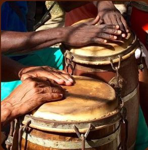

POR QUE A REPRESENTATIVIDADE É IMPORTANTE?
- • Combate a estereótipos e preconceitos;
- • Promove a identificação e autoestima;
- • Cria uma sociedade mais justa e inclusiva;
- • Inspira mudanças e oportunidades;
- • Reflete a realidade.

Representatividade é a garantia da existência de voz, visibilidade e participação ativa de diferentes grupos sociais, que podem ser baseados em raça, gênero, classe social, religião, orientação sexual ou deficiência, em espaços importantes da sociedade, como política, mídia, educação, cultura e mercado de trabalho.
É essencial assegurar que a representatividade seja respeitosa, profunda e digna de cada indivíduo.
Os primeiros africanos escravizados foram trazidos ao Brasil pelos colonizadores portugueses.
Zumbi, líder do Quilombo dos Palmares, tornou-se símbolo da resistência e da luta pela liberdade.
A assinatura da Lei Áurea extinguiu oficialmente a escravidão no Brasil, mas o racismo estrutural permaneceu.
O MNU fortaleceu a luta contra o racismo e a favor da igualdade racial no Brasil.
A lei tornou obrigatório o ensino da história e cultura afro-brasileira nas escolas do país.